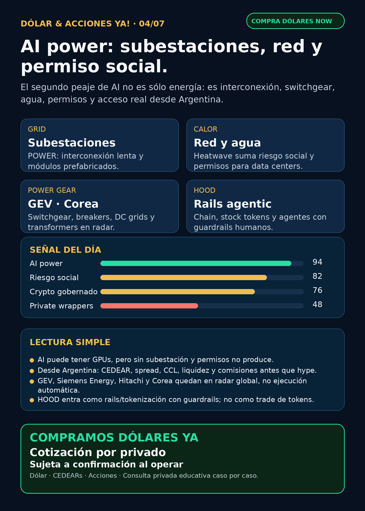

AI power: subestaciones, red y permiso social.
La señal del día no es otra app: es electricidad física para AI. Reporte educativo para Argentina con fuentes verificadas.
Texto WhatsApp
Placa del día

Dólar & Acciones YA — 04/07
Lectura simple del día
La tesis fuerte de hoy es simple: la AI no choca solamente con chips; choca con electricidad física. Un data center puede tener GPUs, edificio y clientes, pero si la subestación no llega, si la interconexión tarda años o si la comunidad se enoja porque falta agua/luz en una ola de calor, esa “AI factory” no produce.
Por eso el radar de hoy mira más fino el segundo peaje de AI: subestaciones modulares, transformadores, switchgear/breakers, DC grids, onsite power, storage, utilities y permisos. No es una orden de compra; es una capa educativa para entender dónde puede moverse plata real alrededor de AI.
Para Argentina, la traducción es clave: una buena empresa global no siempre es buen instrumento local. Un CEDEAR mezcla acción en dólares + CCL/MEP + spread + liquidez + comisiones. Si el activo cotiza en Corea, Alemania, Tokio u OTC, primero hay que verificar si se puede operar desde broker local o si queda sólo para cuenta global.
Contexto dólar usado como referencia, no precio operativo de broker: BlueLytics mostró blue vendedor ARS 1.515, actualizado 2026-07-03 19:45. CriptoYa devolvió 403 en la corrida nocturna, así que no publico MEP/CCL fresco de esa fuente. Para operar, se confirma en broker/mesa al momento.
Tesis central
El mercado venía mirando AI como software + GPU. El research nocturno del 04/07 refuerza otra capa: grid readiness. En criollo: la electricidad tiene que llegar al lugar correcto, con potencia suficiente, permisos, equipos, subestaciones y resiliencia. Ese cuello puede favorecer a proveedores de power hardware y speed-to-power, pero también aumenta riesgo social/regulatorio si la AI compite con hogares e industria por red, agua o energía.
Ordenado por valor educativo/de radar, no por recomendación de compra.
Señales educativas del día — no ranking de compra
1) Subestaciones modulares / interconexión — el cuello físico de AI
- Señal: POWER Magazine publicó el 2026-07-01 que los desarrolladores de data centers avanzaron en densidad de servidores y cooling, pero la interconexión eléctrica sigue lenta. El artículo plantea subestaciones modulares/fabricadas fuera de obra como forma de achicar la brecha entre construcción del data center y red lista.
- Fuente: https://www.powermag.com/energizing-ai-how-modular-substations-alleviate-data-center-power-bottlenecks/
- Lectura en criollo: si no hay subestación, no hay AI factory. Esto convierte la tesis “energía para AI” en piezas concretas: subestaciones, e-houses, switchgear, wiring/testing industrializado y grid integration.
- Proxies globales a estudiar: GE Vernova (
GEV), Siemens Energy (ENR.DE, no Siemens AG), Hitachi/Hitachi Energy (6501.T/HTHIY), HD Hyundai Electric (267260.KS), Hyosung Heavy Industries (298040.KS), LS Electric. Virginia Transformer y Delta Star son privadas/no accionables directo. - Accionable local Argentina: pendiente. Antes de hablar de ejecución hay que verificar CEDEAR/OTC/broker, spread, volumen y moneda.
- Estado: señal fortalecida / radar educativo.
2) Heatwave + data centers — oportunidad y riesgo político al mismo tiempo
- Señal: Al Jazeera reportó el 2026-07-03 que la ola de calor en EE.UU. está poniendo presión sobre la red y el apoyo público a los data centers AI. El artículo cita que los data centers representan cerca de 4% de la demanda eléctrica de EE.UU. y podrían llegar a 9% en 2030, y menciona tensión sobre backup power en emergencias.
- Fuente: https://www.aljazeera.com/economy/2026/7/3/us-heatwave-raises-alarms-over-ai-data-centre-energy-demands
- Lectura: esto fortalece a quienes resuelven power rápido, almacenamiento, generación onsite y flexibilidad de red; pero también sube riesgo de moratorias, permisos más duros y backlash social.
- Proxies globales a estudiar:
VST,CEG,NEE,D,GEV,BE,NGG. - Argentina: proxy local imperfecto vía energéticas argentinas (
YPF,PAMP,TGS,CEPU) y CEDEARs cuando existan. No asumir correlación directa. - Estado: fortalece tesis / sube riesgo regulatorio-social.
3) Corea / switchgear / DC grids — el carril no es sólo transformador grande
- Señal: Korea Economic Daily Global Edition publicó el 2026-07-02 que fabricantes surcoreanos de power equipment amplían apuesta más allá de ultra-high-voltage transformers hacia medium/low-voltage gear y DC grids, impulsados por demanda de AI infrastructure.
- Fuente: https://www.kedglobal.com/energy/newsView/ked202607020007
- Lectura: no alcanza con mirar “transformadores”. También pueden capturar valor breakers, switchgear, DC grids y equipos de distribución. Fuente secundaria con loginwall parcial: sirve para radar, no para decir “comprar Corea” sin primaria de cada empresa.
- Tickers: HD Hyundai Electric (
267260.KS), Hyosung Heavy Industries (298040.KS), LS Electric; comparar conGEV,ENR.DE, Hitachi. - Accionable internacional/global: broker global o mercado Corea/OTC, sujeto a liquidez, moneda y fiscalidad.
- Accionable local Argentina: no verificado. Tratar como radar global hasta comprobar instrumento real.
- Estado: fortalece tesis / vigilar.
4) Bloom + Brookfield — onsite power para AI infrastructure
- Señal: Bloom Energy anunció que Brookfield expandió su framework para financiar power projects de AI infrastructure a USD 25.000 millones, cinco veces el framework previo.
- Fuente: https://www.bloomenergy.com/news/brookfield-and-bloom-energy-expand-ai-infrastructure-partnership/
- Lectura: power rápido/onsite gana relevancia si la red tradicional tarda. Pero no hay que presentar USD 25.000 millones como revenue garantizado de Bloom; es framework/financiación por proyectos.
- Instrumentos: Bloom Energy (
BE) y Brookfield (BN) como radar global. - Argentina: CEDEAR/acceso local de
BEno confirmado. Si no hay instrumento claro, queda como educación/seguimiento. - Estado: señal fortalecida.
5) National Grid / Joulent — capital grande detrás de speed-to-power
- Señal: National Grid 6-K confirma que National Grid Ventures invertirá USD 1.750 millones por 35% de Joulent, orientado a power generation e infraestructura high-voltage para large-load customers.
- Fuente SEC: https://www.sec.gov/Archives/edgar/data/1004315/000165495426006411/a6288k.htm
- Lectura: otro caso de capital y utilities moviéndose hacia generación contratada, alta tensión, storage y conexiones across-the-meter para cargas enormes.
- Proxies:
NGG/NG.L,GEV,CAT,CVX,MSFTcomo mapa de ecosistema, no revenue directo garantizado. - Argentina: acceso y CEDEAR pendientes para varios nombres; verificar antes de ejecución.
- Estado: señal fortalecida.
6) Robinhood Chain / Stock Tokens / Agentic Accounts — crypto gobernado, no casino
- Señal: Robinhood publicó el 2026-07-01 Robinhood Chain public mainnet, Stock Tokens en wallet en más de 120 países según jurisdicción y Agentic Accounts para crypto usando Trading MCP. La fuente aclara que el usuario decide capital y safety guardrails.
- Fuente primaria: https://robinhood.com/us/en/newsroom/robinhood-accelerates-global-expansion-robinhood-chain-mainnet-stock-tokens-agentic-trading/
- Lectura: HOOD se mueve de broker/app hacia rails financieros tokenizados + interfaces agentic. Para Stock Radar esto entra como crypto gobernado/infraestructura, no como token trade ni promesa de rentabilidad.
- Argentina: stock tokens no son CEDEARs ni acción local. Falta revisar regulación, custodia, impuestos y disponibilidad.
- Estado: vigilar.
7) Cameco / Cigar Lake — nuclear también tiene riesgo físico
- Señal: Cameco 6-K/EX-99.1 informó suspensión temporal de Cigar Lake por problemas en el sulfuric acid plant de Orano McClean Lake; espera retorno en unas dos semanas y dice que no impactaría outlook 2026 salvo demora.
- Fuente SEC: https://www.sec.gov/Archives/edgar/data/1009001/000119312526293855/d21040dex991.htm
- Lectura: nuclear/uranio sigue como carril estructural por demanda eléctrica, pero el supply side tiene fragilidad real.
- Estado: vigilar / riesgo operacional.
Watchlist base — seguimiento rápido
- RKLB: sin filing primario nuevo desde Iridium. Sigue tesis space fuerte, con riesgo de deuda, integración, approvals y ejecución.
- NVDA: sin señal operacional nueva superior esta noche. Moat AI infra vigente; no convertir movimientos de precio en tesis sin fuente.
- PLTR: sin señal primaria nueva fuerte. Mantener en radar por software/operaciones, con cuidado de valuación.
- TSM / ASML / MU: sin señal primaria nueva superior hoy; siguen como columna física de AI. MU conserva tesis HBM ya indexada.
- GOOGL/GOOG: sin señal nueva fuerte; TPU/cloud/distribución siguen vigentes.
- AAPL: revisada sin señal primaria nueva fuerte.
- HOOD: señal fuerte por Chain, Stock Tokens y Agentic Accounts; radar fintech/rails.
- TSLA: dato Q2 ya verificado: 451.758 producidos, 480.126 entregados y 13,5 GWh de energy storage; earnings 22/07. Señal mixta, no robotaxi automático.
- Gold / GLD / GOLD / B: sigue ambiguo. No publicar precio ni tesis hasta confirmar si se habla de ETF, minera, oro físico u otro instrumento.
- RVI / DXYZ: wrappers con holdings reales vía SEC, pero no acceso limpio a SpaceX/OpenAI/Anthropic. Falta NAV/premium/liquidez/acceso antes de hablar de ejecución.
- SPCX / SpaceX: radar alto, sin filing nuevo esta noche. No accionable automáticamente sin precio vivo, float, liquidez, broker y riesgo.
- CBRS / Cerebras: sin señal operacional nueva posterior a Q1/OpenAI-AWS; mantener customer concentration/capex/valuation como riesgos.
- AVAV: defensa/drones/backlog siguen en radar; sin contrato primario nuevo fuerte. Material weaknesses siguen como riesgo.
Portfolio/base Mi Simulación
La cartera de Ricardo fue liquidada, devuelta y terminada según corrección de Charly del 24/06. No hay posiciones activas ni P&L real para reportar. Este radar queda como vigilancia para una próxima compra humana o un nuevo inversor.
Energía y capa Argentina
- Tesis central: grid, subestaciones, switchgear, transformers, onsite power, storage y permisos.
- Energéticas argentinas:
YPF,PAMP,TGS,CEPUrevisadas; no apareció señal primaria nueva superior esta noche. Siguen como radar educativo local por Vaca Muerta, gas, generación, tarifas y red. - En criollo: una utility puede beneficiarse por demanda eléctrica, pero carga deuda, capex, regulación, tarifas, permisos y riesgo político.
- Antes de ejecutar desde Argentina: mirar CCL/MEP, spread, volumen, comisiones, ratio CEDEAR si existe, y si el ticker opera realmente en el broker.
Pharma / salud
Carril revisado sin señal nueva más fuerte que energía/fintech:
- LLY / orforglipron / “FDA approval”: sigue NO VERIFICADO sin fuente FDA/Lilly primaria. No publicarlo como aprobación.
- NVO / GLP-1: sin catalyst nuevo verificable que supere lo ya indexado.
- AZN / oncology: carril vigente por señales previas, pero los 6-Ks del 01/07 no agregaron señal clínica/regulatoria superior esta noche.
- PFE / MRK / AMGN / REGN: revisados; sin señal clínica/regulatoria fuerte nueva.
Defensa, space y physical AI
- Defensa/guerra física:
AVAV,GE,RTX,LMT,NOC,GD,HWM,KTOS,BA,ITA/XARrevisados. Sin contrato/backlog primario nuevo superior esta noche. Carril queda en radar, especialmente drones, counter-UAS, motores, aftermarket y defensa aérea. - Space/orbital AI:
RKLBySPCXrevisados. Sin filing nuevo fuerte; SpaceX/SPCX sigue radar alto, no ejecución automática. - Autonomous mobility / physical AI:
TSLAtiene entregas/storage verificadas; Waymo/Alphabet, Zoox/Amazon, Uber y Joby revisados sin señal primaria nueva fuerte en esta corrida.
Red flags / hype para ignorar
- Decir “AI = comprar cualquier energía” sin precio, deuda, permisos ni instrumento.
- Presentar USD 25.000 millones de Bloom/Brookfield como revenue garantizado.
- Vender Corea/OTC como fácil para Argentina sin verificar broker, liquidez y moneda.
- Tratar stock tokens de HOOD como si fueran CEDEARs o acciones locales.
- Vender RVI/DXYZ como “comprar OpenAI/SpaceX limpio” sin NAV, premium/descuento y liquidez.
- Publicar aprobación de LLY/orforglipron sin fuente FDA/Lilly primaria.
- Hablar de Gold/GLD/GOLD/B sin instrumento exacto.
Qué mirar después
- Primarias de GE Vernova, Siemens Energy, Hitachi Energy, HD Hyundai Electric, Hyosung y LS Electric sobre orders/backlog de switchgear, transformers, subestations y DC grids.
- Si PJM/DOE publican datos nuevos sobre data centers, emergency backup o demanda eléctrica.
BE: convertir framework Brookfield en backlog/proyectos/revenue verificables, no humo.HOOD: regulación, custodia, jurisdicciones y adopción real de stock tokens/Agentic Accounts.- RVI/DXYZ: NAV actualizado, premium/descuento, sponsor sales, liquidez y acceso Argentina/USA.
- Earnings/catalysts próximos: Tesla 22/07, semis/memory, utilities y pharma/GLP-1.
Servicio privado
Dólar · CEDEARs · acciones · consulta privada. Si querés comprar o vender dólares, invertir en acciones o pensar una estrategia financiera más personalizada, escribime por privado y lo vemos caso por caso. Cotización sujeta a confirmación al momento de operar.
Disclaimer
Esto no es asesoramiento financiero personalizado ni una orden de compra/venta. Es research educativo para decisión humana, con fuentes verificables y riesgos explícitos.